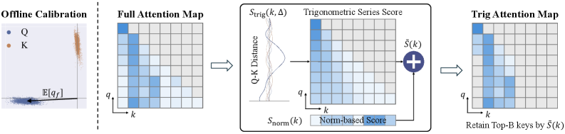

Why it matters왜 중요한가
Every observation-based eviction method inherits the same flaw: the observer rotates.
관측 기반 퇴출 기법은 모두 같은 결함을 물려받는다: 관측자가 회전한다.
Long reasoning generates 32K-token chains of thought, and the KV cache grows with them. SnapKV, H2O, R-KV and kin decide what to keep by watching which keys recent queries attend to. But under RoPE a query's orientation is position-dependent — older queries are stale evidence, and prior work shows enlarging the observation window stops helping past ~25 queries. Retrieval-head keys that lie dormant for thousands of tokens before becoming critical are exactly what this window misses. TriAttention's move is to stop observing and start predicting: find something position-invariant (pre-RoPE statistics) from which future attention is computable in closed form.
긴 추론은 32K 토큰짜리 사고 사슬을 낳고 KV 캐시도 함께 자란다. SnapKV·H2O·R-KV류는 최근 쿼리가 어떤 키를 보는지 관찰해 무엇을 남길지 정한다. 그러나 RoPE 하에서 쿼리 방향은 위치 의존적 — 오래된 쿼리는 낡은 증거이며, 선행 연구는 관측 창을 ~25 쿼리 이상 늘려도 소용없음을 보였다. 수천 토큰 동안 잠자다 결정적이 되는 retrieval 헤드의 키가 바로 이 창이 놓치는 것들이다. TriAttention의 수는 관찰을 멈추고 예측하는 것: 위치 불변인 무언가(pre-RoPE 통계)를 찾아 미래 어텐션을 닫힌형으로 계산한다.

By the numbers핵심 숫자
concentration R > 0.95Q/K 집중도 R > 0.95인
헤드 비율
at Full-Attention accuracy동일 정확도에서
처리량 / KV 메모리
TriAttention vs R-KVAIME25 @ 예산 2048
TriAttention vs R-KV
(1,405 vs 223 tok/s)MATH-500 처리량
(1,405 vs 223 tok/s)
32K tokens kept (Full: 69.6)32K 중 1,024 토큰만으로
MATH-500 (Full: 69.6)
the series (layer 1, head 1)삼각급수의 어텐션 재구성
(1층 1헤드)
The core finding — Q/K concentration핵심 발견 — Q/K 집중
Before RoPE rotates them, query and key vectors in each frequency band cluster tightly around a fixed, non-zero center — stable across positions, inputs, and even domains (mean resultant length R = ‖E[q]‖/E[‖q‖] measures this; Math/Coding/Chat all give 0.977–0.980). If q ≈ q̄ and k ≈ k̄, the RoPE attention logit Σf‖qf‖‖kf‖cos(ωfΔ+φf) becomes a function of the distance Δ alone — a trigonometric series whose coefficients are the centers. Different centers produce different attention-vs-distance curves: some heads prefer near keys (local attention), others far ones (sinks). The series reconstructs real attention with Pearson r peaking at 0.6–0.9 across Qwen3, Qwen2.5, and Llama3 — and the same concentration holds on an MLA architecture (GLM-4.7-Flash: 96.6% of heads R>0.95).
RoPE가 회전시키기 전, 각 주파수 대역의 쿼리·키 벡터는 고정된 비영(非零) 중심 주위에 강하게 뭉친다 — 위치·입력·도메인에 걸쳐 안정적이다(평균 합벡터 길이 R = ‖E[q]‖/E[‖q‖]로 측정; Math/Coding/Chat 모두 0.977~0.980). q ≈ q̄, k ≈ k̄이면 RoPE 어텐션 로짓 Σf‖qf‖‖kf‖cos(ωfΔ+φf)는 거리 Δ만의 함수 — 계수가 중심으로 정해지는 삼각급수 — 가 된다. 중심이 다르면 어텐션-거리 곡선도 다르다: 어떤 헤드는 가까운 키(국소 어텐션), 어떤 헤드는 먼 키(싱크)를 선호한다. 이 급수는 Qwen3·Qwen2.5·Llama3에서 Pearson r 0.6~0.9 피크로 실제 어텐션을 재구성하고, MLA 아키텍처(GLM-4.7-Flash: 헤드 96.6%가 R>0.95)에서도 같은 집중이 성립한다.

In one diagram한 장의 그림
Idea: two scores, balanced by concentration아이디어: 집중도로 저울질하는 두 점수
Trigonometric series score
For a cached key k at future distance Δ: Strig(k,Δ) = Σf ‖E[qf]‖·‖kf‖·cos(ωfΔ+φf) — the attention this key is expected to receive from the average future query. Since a key can be queried from anywhere ahead, the score is averaged over geometrically-spaced offsets D = {1,2,4,…,2¹⁶} (geometric beats linear spacing by +17.1pp).
캐시된 키 k, 미래 거리 Δ에 대해: Strig(k,Δ) = Σf ‖E[qf]‖·‖kf‖·cos(ωfΔ+φf) — 이 키가 평균적 미래 쿼리로부터 받으리라 기대되는 어텐션. 키는 앞의 어느 위치에서든 조회될 수 있으므로 기하 간격 오프셋 D = {1,2,4,…,2¹⁶}으로 평균한다(기하 간격이 선형보다 +17.1pp).
Concentration-gated norm score
The series assumes vectors sit exactly at their centers. Residual variation is caught by Snorm = Σf (1−Rf)·E[‖qf‖]·‖kf‖: when a band is highly concentrated (Rf→1) the trig prediction is trusted; when it isn't, the norm term takes over. Removing Strig craters AIME24 from 42.1 to 18.8; removing the (1−R) gate also hurts — both signals earn their place.
급수는 벡터가 정확히 중심에 있다고 가정한다. 잔여 변동은 Snorm = Σf (1−Rf)·E[‖qf‖]·‖kf‖가 받는다: 대역이 강하게 집중되면(Rf→1) 삼각 예측을 신뢰하고, 아니면 norm 항이 넘겨받는다. Strig 제거 시 AIME24가 42.1→18.8로 붕괴; (1−R) 게이트 제거도 성능 하락 — 두 신호 모두 제 몫을 한다.

How it works어떻게 작동하나
- Calibrate once, offline오프라인 1회 캘리브레이션Collect per-band Q statistics (center, mean norm, concentration R) from any ~50K–960K tokens — even Google-homepage HTML works (46.2 vs 46.7 for high-quality chat data), because the statistics are model-intrinsic.아무 텍스트 ~50K~960K 토큰에서 대역별 Q 통계(중심·평균 norm·집중도 R)를 수집 — 구글 홈 HTML로도 된다(46.2 vs 고품질 채팅 46.7). 통계가 모델 고유 속성이기 때문.
- Score keys without queries쿼리 없이 키 점수화Each cached key's pre-RoPE vector + its position give Strig and Snorm; average over log-spaced future offsets for a holistic importance S̃(k).캐시된 키의 pre-RoPE 벡터 + 위치만으로 Strig·Snorm을 계산하고, 로그 간격 미래 오프셋으로 평균해 종합 중요도 S̃(k)를 얻는다.
- Prune in windows윈도우 단위 가지치기Every β=128 generated tokens (same protocol as R-KV), score all keys and keep the top-B for the budget.생성 β=128 토큰마다(R-KV와 동일 프로토콜) 전체 키를 점수화해 예산 내 상위 B개만 유지.
- Aggregate across GQA headsGQA 헤드 간 집계Each shared KV head gets G scores (one per query head); z-score-normalize per head, then take the max — a key survives if any head wants it.공유 KV 헤드는 쿼리 헤드당 하나씩 G개 점수를 받는다; 헤드별 z-score 정규화 후 max — 어느 헤드라도 원하면 키는 살아남는다.
Results — biggest wins where eviction hurts most결과 — 퇴출이 가장 아픈 곳에서 최대 격차
| Method | AIME24 | AIME25 | MATH-500 |
|---|---|---|---|
| Full Attention | 57.1 | 40.8 | 69.6 |
| SnapKV | 34.6 | 20.0 | 49.2 |
| R-KV | 25.4 | 17.5 | 46.4 |
| TriAttention | 42.1 | 32.9 | 56.0 |
Give it a bit more budget and the gap closes: at 4096 tokens TriAttention reaches 43.3 on AIME25 — above Full Attention's 40.8. Beyond math: best average on LongBench (48.1, winning 11/16 subtasks) and RULER (66.1 vs SnapKV's 55.6). On a recursion memory-stress benchmark, R-KV collapses from 61% to 31% at depth 16 while TriAttention tracks Full Attention — direct evidence it stops evicting keys that "wake up" later. It even lets a Qwen3-32B (INT4) agent run multi-turn on a single RTX 4090 where full attention OOMs.
예산을 조금 더 주면 격차가 닫힌다: 4096 토큰에서 AIME25 43.3 — Full Attention의 40.8을 상회. 수학 밖에서도: LongBench 평균 최고(48.1, 16개 중 11개 승리), RULER 66.1(SnapKV 55.6). 재귀 메모리 스트레스 벤치마크에선 깊이 16에서 R-KV가 61%→31%로 붕괴하는 동안 TriAttention은 Full Attention을 따라간다 — "나중에 깨어나는" 키를 퇴출하지 않는다는 직접 증거. Qwen3-32B(INT4) 에이전트를 RTX 4090 한 장에서 멀티턴 구동까지 가능케 한다(full attention은 OOM).
What to take away그래서, 가져갈 것
From observation to prediction. The field scored keys by watching recent queries; TriAttention derives future attention analytically from position-invariant statistics. That's a genuinely different paradigm for eviction.
관찰에서 예측으로. 지금까진 최근 쿼리를 지켜보며 키를 점수 매겼다; TriAttention은 위치 불변 통계로부터 미래 어텐션을 해석적으로 유도한다. 퇴출의 진짜 다른 패러다임.
Q/K concentration is a reusable discovery. Fixed pre-RoPE centers that survive across domains and even MLA — useful well beyond compression: RoPE analysis, attention-sink theory, head taxonomy.
Q/K 집중은 재사용 가능한 발견. 도메인과 MLA까지 가로지르는 고정 pre-RoPE 중심 — 압축 너머 RoPE 분석·어텐션 싱크 이론·헤드 분류에도 유용하다.
Calibration that doesn't care about data. 50K tokens of junk HTML calibrates as well as curated chat — strong evidence the centers are properties of the weights, not the data.
데이터를 가리지 않는 캘리브레이션. 저품질 HTML 50K 토큰이 정제된 채팅만큼 잘 작동 — 중심이 데이터가 아닌 가중치의 속성이라는 강한 증거.
Reasoning is the right stress test. The recursion benchmark shows eviction failures as chain-breaking, not just perplexity — the failure mode that actually matters for long CoT and agents.
추론이 올바른 스트레스 테스트. 재귀 벤치마크는 퇴출 실패를 perplexity가 아닌 사슬 단절로 보여준다 — 긴 CoT와 에이전트에서 실제로 중요한 실패 모드.